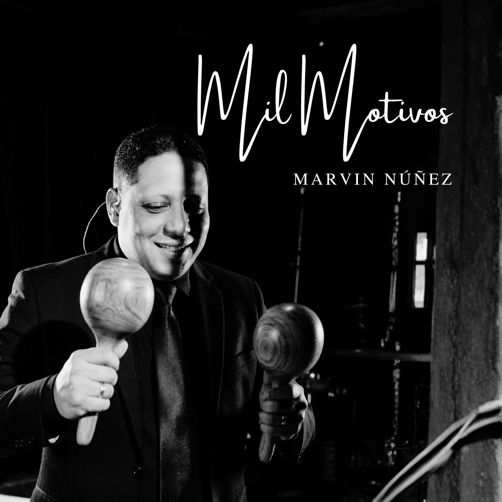

Mil Motivos
Marvin Núñez
Escucha Mil Motivos en tu plataforma favorita y compártela con alguien que necesite una canción de fe, esperanza y gratitud.

Escucha Mil Motivos en tu plataforma favorita y compártela con alguien que necesite una canción de fe, esperanza y gratitud.